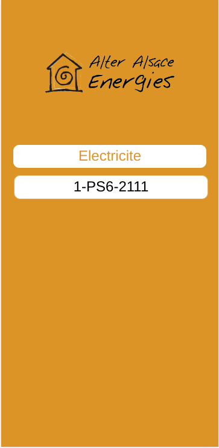

<div class="theme">
    <div class="intro">
        <mat-card class="card">
            <mat-card-header>
                <mat-card-title>Projets à l'UHA</mat-card-title>
                <mat-card-subtitle>Les projets que j'ai réalisé à l'UHA</mat-card-subtitle>
            </mat-card-header>
            <mat-card-content>
                <mat-card class="texte">
                    <mat-card-header>
                        <mat-card-title>MDC: Marre Du Célibat</mat-card-title>
                        <mat-card-subtitle>Application mobile pour sortir entre amis</mat-card-subtitle>
                    </mat-card-header>
                    <mat-card-content>
                        <p>Ce projet a été apporté à l'UHA poar une cliente voulant faire une application mobile suite
                            au sondage qu'elle a réalisé sur ses pages Faceboo et Instagram</p>
                        <p>Le but de l'application est de permettre aux utilisateurs de se retrouver entre amis pour
                            sortir et faire des activités ensemble.</p>
                        <p>Le projet a été réalisé en groupe de 5 personnes sur une durée de 6 semaines.</p>
                        <p>Les frameworks utilisés sont Ionic/Angular pour la partie mobile et NestJS pour le backend
                            avec une base de données MySQL ainsi qu'un docker</p>
                        
                        
                        
                        <p>Sur ce projet, j'ai créé la page Activités et son formulaire coté mobile et les services et
                            tables coté backend</p>
                        <p>J'ai utilisé une API libre du gouvernement pour gérer les adresses et permettre le calcul de
                            distance entre une activité et l'utilisateur</p>
                    </mat-card-content>
                </mat-card>
                <mat-card class="texte">
                    <mat-card-header>
                        <mat-card-title>E-ProMoov </mat-card-title>
                        <mat-card-subtitle>Application Web pour gérer les informations d'appareils médicaux
                        </mat-card-subtitle>
                    </mat-card-header>
                    <mat-card-content>
                        <p>Ce projet a été réalisé en groupe de 5 personnes sur une durée de 6 semaines.</p>
                        <p>Le but du projet était de créer une interface Web avec accès pour praticiens et techniciens
                            permettant l'affichage de données de capteur présent sur divers appareils médicaux afin
                            d'avoir un suivi précis.</p>
                        <p>Les appareils médicaux contiennent des ordinateurs de type Raspberry Pi avec des capteurs. Il
                            fallait créer l'interface entre le robot et la base de données</p>
                        <p>La technologie utilisée était le C++ pour l'interface et MongoDB pour la base de données</p>
                        <p>L'application Web a été créé avec les Frameworks Angular avec un serveur en NestJS avec une
                            base de données MariaDB </p>
                        <p>Les données traitées et ajoutées dans la base de données MongoDB sont ensuite extraite vers
                            l'application Web sous forme d'un diagramme</p>
                        
                        <p>Sur ce projet, j'ai créé toutes les pages Web de l'application, les graphiques et les
                            fonctions permettant d'afficher correctement les graphiques suivant l'utilisateur. Les
                            techniciens ne doivent pas voir les graphiques pour les praticiens conformément au secret
                            médical.</p>
                        <p>
                            J'ai créé la fonction permettant de sauvegarder les données d'un graphique en fichier Excel
                            téléchargeable
                        </p>
                    </mat-card-content>
                </mat-card>
                <mat-card class="texte">
                    <mat-card-header>
                        <mat-card-title>Steamer</mat-card-title>
                        <mat-card-subtitle>Application mobile de rencontre entre joueurs de jeux vidéos
                        </mat-card-subtitle>
                    </mat-card-header>
                    <mat-card-content>
                        <p>Ce projet a été réalisé en groupe de 4 personnes sur une durée de 6 semaines.</p>
                        <p>Le client voulait une application mobile de rencontre entre joueurs utilisant la plate-forme
                            de jeux vidéo Steam</p>
                        <p>Un système de Swipe devait être mis en place du type de l'application de rencontre Tinder</p>
                        <p>Ainsi qu'une connexion sécurisée utilisant Steam et il fallait pouvoir faire un algorithme
                            permettant de trouver des affinités de jeux entre utilisateurs</p>
                        <p>J'ai initialisé le projet avec les Frameworks Ionic/Angular pour la partie mobile et NestJS
                            avec une base de données MariaDB pour le Backend</p>
                        <p>J'ai mis en place toutes les pages de l'application mobile et construis les routes
                            principales dans le Backend</p>
                        
                        
                        
                        <p>J'ai effectué la mise en place de la connexion utilisateur Steam par OpenID en passant par le
                            serveur pour sécuriser les données.</p>
                        <p>Une fois l'inscription réalisée, le serveur va s'occuper de récupérer les informations
                            concernant l'utilisateur par l'API Steam comme son pseudo et les derniers jeux qu'il
                            a joué les 15 derniers jours</p>
                        
                        
                        
                        <p>J'ai réalisé une fonctionnalité permettant de rechercher un jeu dans la liste des jeux
                            existants des utilisateurs et une autre permettant de faire la recherche de joueurs par
                            rapport au jeu selectionné</p>
                        <p>Une icone "poubelle" permet d'annuler la recherche par jeu unique et de revenir à une
                            recherche par rapport aux derniers jeux joués.</p>
                        
                        
                        
                    </mat-card-content>
                </mat-card>
                <mat-card class="texte">
                    <mat-card-header>
                        <mat-card-title>Projet TUBA</mat-card-title>
                        <mat-card-subtitle>Application Web de gestion de bâtiments publiques concernant l'eau, le gaz et
                            l'électricité</mat-card-subtitle>
                    </mat-card-header>
                    <mat-card-content>
                        <p>Ce projet a été réalisé en groupe de 5 personnes sur une durée de 6 semaines.</p>
                        <p>Présenté comme un projet From Scratch, il y avait en fait déjà une application Web et un serveur fonctionnels</p>
                        <p>Le but a été de créer une application mobile pour que des employés de communes puissent faire les relevés de compteur facilement.</p>
                        <p>Il était aussi question de corriger les diagrammes du site Web et d'ajouter la fonctionnalité de notification d'alerte par mail</p>
                        <p>Le site Web utilisait le Framework VueJS et le backend avait le Framework ExpressJS avec une base de données MariaDB</p>
                        <p>La création de l'application mobile s'est effectuée avec le Framework React Native</p>
                        
                        
                        <p>J'ai créé la page de connexion utilisateur sécurisé par token</p>
                        
                        
                        
                        
                        
                        <p>J'ai créé la page de relevé de compteur fonctionnant en page par page pour être plus intuitif.</p>
                        <p>L'utilisateur connecté à sa commune choisit le bâtiment, puis le type d'énergie et le numéro de contrat du compteur</p>
                        <p>Il peut ensuite relevé le compteur et valider ou annuler pour revenir au début</p>
                        <p>Toutes les batiments et les compteurs sont stockés dans le cache de l'application pour pouvoir avoir accès sans avoir de connexion vers le serveur</p>
                        <p>La connexion administrateur demande la commune où il veut relever un compteur</p>
                        
                        
                        <p>Après avoir validé le nouveau relevé de compteur, celui ci est envoyé au serveur si l'utilisateur a une couverture réseau et une notification lui indique que le relevé est bien ajouté</p>
                        <p>En cas de couverture réseau inexistante au moment de l'envoi, le relevé de compteur sera stocké dans le cache de l'application et une notification sera envoyé à l'utilisateur indiquant que le relevé est mis en attente</p>
                        <p>L'application peut gérer plusieurs relevés en attente et dès que l'utilisateur retrouve une couverture réseau, toutes les données seront envoyés automatiquement au serveur en notifiant l'action à l'utilisateur</p>
                        
                        <p>J'ai aussi mis en production l'application web et le serveur en CI/CD sur Heroku</p>
                    </mat-card-content>
                </mat-card>
            </mat-card-content>
        </mat-card>
    </div>
</div>